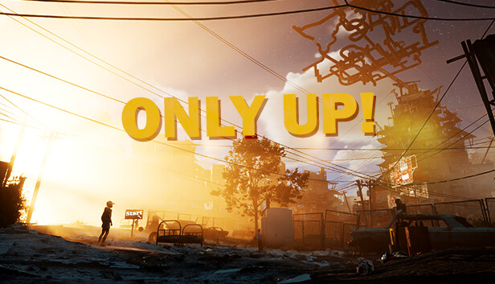
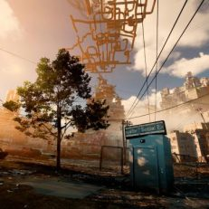
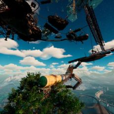
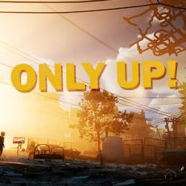
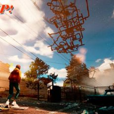

ONLY UP! PC ESPAÑOL v07.07.2023
ONLY UP! PC ESPAÑOL
Descargar Only UP! PC Español un juego de plataformas en el que ayudas a Jackie, la protagonista adolescente del juego, a salir de la pobreza atravesando un laberinto de tuberías, ferrocarriles y trenes suspendidos en el aire. Aunque es bastante corto, ten en cuenta que no tiene un sistema de puntos de control o guardado.
FICHA TECNICA
- PLATAFORMA: PC
- PESO TOTAL: 4.7GB
- FORMATO: ISO ELAMIGOS
- TEXTOS: English, French, Spanish, Russian, Japanese, Korean, Simplified Chinese
- AUDIO: English
- FECHA DE ESTRENO: 14/02/20
- FECHA DE ACTUALIZACION: 13/08/23
- COMPRAR EN STEAM
Error
No se ha podido cargar la información sobre este artículo.
ESTA VERSIÓN INCLUYE
- Descargar Only Up! Juego para PC en Español v07.07.2023
GAMEPLAY TRAILER
CAPTURAS




REQUISITOS DEL SISTEMA
MÍNIMO
- Requiere un procesador y un sistema operativo de 64 bits
- SO: Windows 8/10/11 (64-Bit)
- Procesador: Intel Core i5-6600@ 3.1 GHz or AMD R5 1600X @ 3.5 GHz or equivalent
- Memoria: 8 GB de RAM
- Gráficos: NVIDIA GeForce GTX 1650 or equivalent
- DirectX: Versión 12
- Almacenamiento: 6 GB de espacio disponible
RECOMENDADOS
- Requiere un procesador y un sistema operativo de 64 bits
- SO: Windows 8/10/11 (64-Bit)
- Procesador: Intel Core i5 10400 3.1 GHz or AMD Ryzen 5 2600x 3.1 GHz
- Memoria: 16 GB de RAM
- Gráficos: NVIDIA GeForce RTX 3060 or equivalent
- DirectX: Versión 12
- Almacenamiento: 6 GB de espacio disponible
INSTRUCCIONES
- Descargar el juego
- Descomprimir carpeta RAR- Es importante que actualice su WinRar a la v5.60 o use 7zip para descomprimir
- Montar el archivo ISO con «Damon tools o similar»
- Ejecutar el setup.exe e instalar
- Ejecutar el juego como Administrador
- El idioma se cambia en el menú del juego en Settings.
- Jugar 😉
ENLACES DE DESCARGA
JUEGO
Mega, Mediafire y Google Drive
Torrent